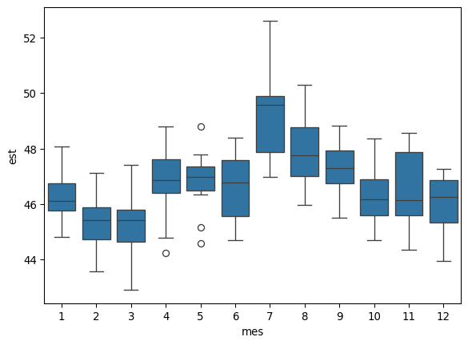

8Caso 1. Análisis de una fabricación de queso camembert usando Python y Google Colab.
En este ejercicio usaremos un fichero o archivo de datos en formato CSV que habremos exportado previamente desde nuestra hoja de cálculo. Más adelante aprenderemos cómo leer directamente los datos de nuestras hojas Excel.
Coo vimos en el capítulo 2, es muy conveniente establecer un flujo de trabajo regular, de forma que cada etapa del análisis sea un paso que se apoye en los anteriores.
Este flujo de trabajo debe cubrir las etapas que veíamos en ese capítulo:
Vamos a ir desarrollando este flujo paso a paso.
1. Importar los datos
En este cuaderno vamos a cargar los datos desde GitHub; estos datos pueden ser descargados en el ordenador o Google Drive de cada uno, junto con el cuaderno, en los enlaces facilitados al principio. Una vez en Drive, puede leerse la tabla mediante el método que vimos al final del capítulo anterior.
import pandas as pdimport matplotlib.pyplot as pltimport seaborn as snsurl_datos ='https://raw.githubusercontent.com/juanriera/master-queseria/master/datos/camembert.csv'try: df = pd.read_csv(url_datos, decimal =",", sep=';', encoding='ISO-8859-1')print("¡Archivo ", url_datos," cargado correctamente!")print(f"Dimensiones de los datos: {df.shape}")exceptExceptionas e:print(f"Error al cargar el archivo: {e}")
¡Archivo https://raw.githubusercontent.com/juanriera/master-queseria/master/datos/camembert.csv cargado correctamente!
Dimensiones de los datos: (211, 7)
Vemos el dataframe que hemos leído, mediante la funcion .head(), que nos muestra las cinco primeras lineas.
df.head()
fecha
fabricacion
est
mg
ph
cloruros
coliformes
0
11/01/2020
1
46.68
24.0
4.85
1.50
80.0
1
12/01/2020
1
48.09
25.0
4.67
1.61
0.0
2
13/01/2020
1
45.97
24.0
4.71
1.48
9200.0
3
14/01/2020
1
46.24
23.5
4.78
1.69
20.0
4
15/01/2020
1
45.81
23.0
4.77
1.56
150.0
Verificamos la estructura interna de nuestro dataframe y el tipo de los datos (entero, numérico, carácter…) mediante la función .info()
Como resultado de la importación el csv, la fecha aparece como columna object, que es un tipo genérico de datos que incluye el tipo character, que es en realidad como pythonconsidera esta columna; nos interesa convertirla en un formato de fecha que pandas pueda reconocer.
df['fecha'] = pd.to_datetime( df['fecha'], format='%d/%m/%Y', errors='coerce'# Si hay una fecha inválida, la convierte a 'NaT' (Not a Time) en lugar de fallar.)
Recuerda que si no comprendes bien el código, puedes copiarlo y pegarlo en Google Gemini y pedir a Gemini una explicación detallada de lo que hace. Puedes también preguntar a Gemini que te explique bien la función .to_datetime() con los diferentes formatos de conversión de fechas.
Ahora la fecha tiene formato datetime64 que es el formato de fecha que reconoce pandas.
2. Ordenar/limpiar los datos
La tabla de datos que hemos leído ya está en un formato tidy: una línea por observación y una columna por medida, como comprobamos inspeccionando las primera lineas de código:
df.head()
fecha
fabricacion
est
mg
ph
cloruros
coliformes
0
2020-01-11
1
46.68
24.0
4.85
1.50
80.0
1
2020-01-12
1
48.09
25.0
4.67
1.61
0.0
2
2020-01-13
1
45.97
24.0
4.71
1.48
9200.0
3
2020-01-14
1
46.24
23.5
4.78
1.69
20.0
4
2020-01-15
1
45.81
23.0
4.77
1.56
150.0
Vamos entonces a verificar que los valores que hemos leído son correctos. ¿Qué tenemos que buscar?
Valores mal introducidos que Pythonno tiene por qué saber que son erróneos (por ejemplo, un pH de 51,5 en vez de 5,15)
Valores anormalmente altos o bajos, que pueden indicar errores de medida, de toma de muestras o de introducción de datos (por ejemplo, un pH de leche de 30, que puede indicar una lectura de temperatura introducida fuera de sitio)
Valores erróneos: por ejemplo, valores negativos en cualquier medida
Una distribucion de los datos anormal:
por ejemplo, el pH de un queso debería tener la mayor frecuencia entorno al pH objetivo, y desviaciones con una frecuencia cada vez más baja a medida que se alejan del valor central
en cambio, los recuentos de bacterias coliformes deberían tener la mayor frecuencia en los valores cero o muy bajos, y la distribución no debería ser simétrica
En general, cualquier cosa que nos llame la atención en los datos y que debemos explicar.
Para hacer esta verificación, analizamos cada variable (columna) por separado.
3. Visualizar: Análisis gráfico
Comenzamos el análisis estudiando la variable o columna est, que almacena los valores de extracto seco total. Utilizamos las herramientas gráficas que conocemos: histograma y diagrama de caja. Por el momento no nos preocupamos de rotular el gráfico, estamos simplemente explorando de forma rápida.
El histograma
sns.histplot(df["est"])plt.show()
También podemos utilizar seaborn, que nos permite incluir la curva de densidad de forma muy sencilla.
sns.displot(df["est"], kde =True)plt.show()
El histograma nos muestra la mayor frecuencia en torno a los valores centrales, la distribución es aproximadamente simétrica, y parece tener algún valor anormalmente alto (52). ¿Debería preocuparnos este valor? ¿Es razonable o puede ser un error?
La curva de densidad muestra algo que debe resultarnos sospechoso: hay una subida en torno a 52. Una curva de distribución que fuese semejante a una campana de Gauss (distribución normal) no debería mostrar uncambio en sus extremos, sino amortiguarse suavemente hasta cero.
Continuamos explorando con el boxplot.
El boxplot
sns.boxplot(df['est'])plt.show()
El boxplot nos indica que no sólo el valor ligeramente por encima de 52 parece anormal, también lo parecen algunos valores por encima de 50.
Los gráficos de series temporales
Ya sabemos que paree haber algún valor atípico, anormalmente alto, en nuestros datos. ¿Cómo podemos profundizar un poco más y decidir si debemos excluir estos valores analíticos?
Sabemos que estos resultados se han obtenido a lo largo de un año. ¿Puede haber pasado algo en algún momento que haya hecho que algunos resultados se hayan desviado? Veamos cuál ha sido la evolución anual del extracto seco total de nuestra fabricación, descrito por la columna o variable est.
df['est'].plot()plt.show()
El gráfico representa los valores individuales de manera secuencial, y el eje X muestra el número de orden del valor. Sería mucho más útil si este eje estuviera rotulado con fechas. Seaborn puede ayudarnos con esto.
Como hemos convertido la columna fecha a un formato de fecha, seabornla reconoce y rotula el eje correctamente.
Los valores anormales se han producido en el verano, en torno a julio-agosto. En esta época ha habido una subida de los valores de extracto seco total. A la vista del gráfico, los valores por encima de 50, aunque extremos, parece que están dentro de un momento en el que el extracto seco se había desviado hacia arriba. Esto sitúa a esos valores en un contexto temporal en el que probablemente puede que no fueran tan anormales. ¿Qué quiere decir esto? Pues que si un valor de 52 es atípico frente al conjunto de datos completo, es posible que no lo sea si los valores que lo rodean también lo eran y se consideran sólo esos valores de contexto.
Vamos a explorar esto un poco más y mostrar los datos por meses, para ver si considerados mes a mes, el valor de 52 sigue pareciendo anormal, y vamos a utilizar también pandaspara hacer los gráficos de series.
El boxplot por categorías
Para representar los datos por mes con pandas, tenemos que crear una columna índice con la fecha:
La función .normalize() elimina de los campos de fecha/tiempo la parte referida a minutos y segundos, aquí se ha usado como ejemplo, porque nuestras fechas no tienen ese nivel de detalle.
AUnque el índice fecha_index que hemos creado, que tiene tipo DateTimeIndex, no aparece entre las columnas, sí está reseñado en el encabezado de la descripción, y muestra que existen 211 entradas desde el 11/1/2020 hasta el 29/12/2020. Usamos este índice para crear una columna con el mes, usando una de las muchas funciones de pandas asociadas a una columna de fecha. En este caso, .month() extrae el mes en formato numérico:
df['mes'] = df.index.month
Veamos la columna en nuestro DataFrame:
df.head()
fecha
fabricacion
est
mg
ph
cloruros
coliformes
mes
fecha_index
2020-01-11
2020-01-11
1
46.68
24.0
4.85
1.50
80.0
1
2020-01-12
2020-01-12
1
48.09
25.0
4.67
1.61
0.0
1
2020-01-13
2020-01-13
1
45.97
24.0
4.71
1.48
9200.0
1
2020-01-14
2020-01-14
1
46.24
23.5
4.78
1.69
20.0
1
2020-01-15
2020-01-15
1
45.81
23.0
4.77
1.56
150.0
1
Ahora podemos agrupar nuestros valores por meses, y comprobar los valores anormales dentro de cada mes. Para ello, simplemente indicamos a seaborn la variable que va a estar en el eje X:
sns.boxplot(x='mes', y='est', data=df)plt.show()

En vez de usar el número para el mes, podemos usar el código de letras abreviado. En este caso, seabornutiliza la abreviatura en inglés , pero podríamos cambiar la codificación para que lo represente en español con la instruccion locale (queda como ejercicio personal explorar el uso y opciones de esta instrucción).
Aprovechamos para personalizar un poco el gráfico, y mostramos cómo pueden añadirse diferentes opciones de formato; cuando Python encuentra opciones de formato, el gráfico no se mostrará hasta que ejecutemos la instrucción .show()
df['mes_abreviado'] = df.index.strftime('%b')sns.boxplot(x='mes_abreviado', y='est', data=df)# Opcional: Personalizar el gráficoplt.title('Boxplot de la variable "est" por Mes')plt.xlabel('Mes')plt.ylabel('Valor de "est"')plt.grid(axis='y', linestyle='--', alpha=0.7) # Añadir una cuadrícula para mejor lecturaplt.xticks(rotation=45) # Rotar las etiquetas del eje X si son muchasplt.tight_layout() # Ajusta automáticamente los parámetros de la subtrama para un diseño ajustadoplt.show()
¡Ahora nuestra visión de los datos ha cambiado! Resulta que los valores anaíticos de extracto seco han ido variando a lo largo del año, y el valor supuestamente anómalo de 52 ya no lo es considerando los datos mes a mes, porque todos lo valores de julio han sido muy altos, y 52 no parece extremo en este contexto. En cambio, vemos que en mayo sí ha habido valores anómalos en relación a los obtenidos en el mes. ¿Deben preocuparnos estos valores de mayo? Probablemente no, porque están dentro del conjunto de los valores anuales; sin embargo, es conveniente profundizar en la razón por la que la dispersión de los valores de mayo, mostrada por el rango intercuartil, es muy baja, y sin embargo en junio ha aumentado mucho. Los valores de julio sí parecen excesivamente altos casi durante todo el mes, la mediana de los valores ha sido la más alta del año.
Detallemos un poco más, viendo los valores semanales:
df["est"].resample('W-MON').mean().plot(title="Media del extracto seco total semanal");plt.show()
Hagamos un zoom en los valores de abril a agosto utilizando las opciones de filtro de fechas de pandas:
df["est"]["2020-04":"2020-08"].resample('W-MON').mean().plot(title="Media del extracto seco total semanal");plt.show()
Efectivamente, las semanas de julio han tenido valores crecientes de extracto seco, y esto no se ha corregido hasta el mes de agosto. En realidad, a partir de octubre se ha bajado el extracto seco de nuevo a valores más cercanos a los del primer semestre.
La opción de filtro de fecha puede aplicarse también a las funciones de seaborn, veamos un ejemplo que muestra con claridad el aumento de extracto seco en julio frente a los meses anteriores.
df['mes_abreviado'] = df.index.strftime('%b')sns.boxplot(x='mes_abreviado', y='est', data=df["2020-04":"2020-08"])# Opcional: Personalizar el gráficoplt.title('Boxplot de la variable "est" por Mes')plt.xlabel('Mes')plt.ylabel('Valor de "est"')plt.grid(axis='y', linestyle='--', alpha=0.7) # Añadir una cuadrícula para mejor lecturaplt.xticks(rotation=45) # Rotar las etiquetas del eje X si son muchasplt.tight_layout() # Ajusta automáticamente los parámetros de la subtrama para un diseño ajustadoplt.show()
De manera visual, podemos aceptar que, en general, cuando la caja del boxplot se sitúa claramente por encima o por debajo de la caja de otro boxplot, las diferencias entre los dos conjuntos de valores son significativas; en este caso, podemos afirmar con claridad que los extractos secos de julio han sido significativamente superiores a los de los meses anteriores.
Antes de pensar en posibles causas de esta desviación, vamos a hacer el mismo análisis en la materia grasa, y después estableceremos una hipótesis de trabajo que explique esta desviación. Este es un punto importante del análisis en el que hay que insistir:
Nunca conviene precipitar el establecimiento de hipótesis sobre las causas de un problema, es imprescindible completar el proceso de análisis de los elementos que tengamos anuestra disposición, sin perjuicio de que nuevos ciclos de análisis, transformación y visualización nos permitan seguir profundizando
sns.displot(df["mg"], kde =True)plt.show()
sns.boxplot(x='mes', y='mg', data=df)plt.show()
También en la materia grasa hay valores anormales, el único que parece fuera de contexto es el valor anormal de enero.
El gráfico de dispersión
En general, cuando en una fabricación de queso aumenta el extracto seco, lo más común es que aumente también la materia grasa, que forma parte de ese extracto seco. ¿Cómo han variado la mg y el estdurante el perído que estamos considerando? Veámoslo con un diagrama de dispersión:
Seaborn Nos permite incluir una zona de confianza o intervalo de confianza para los valores que varían conjuntamente; utilizaremos la curva equivalente a la función de densidad que veíamos en el histograma:
Seaborn tiene un gráfico muy interesante que nos permite ver ambas variables en un gráfico conjunto, que nos muestra histogramas y un diagrama de dispersión.
sns.jointplot( x="est", y="mg", data = df)plt.show()
En estos dos gráficos, vemos que hay tres valores que podríamos considerar al menos como sospechosos:
El valor 52 de extracto seco total
El valor 28 de materia grasa
Un valor que los boxplot no nos habían detectado, por debajo de 22 de mg y por encima de 48 de est, lo que resulta anormal dentro de la composición habitual del queso.
El dibujo de la zona de confianza del gráfico de dispersión nos facilita el análisis de lo que debemos considerar anómalo y lo que no lo es; es muy útil para el análisis de variables que están relacionadas y que pueden (o deben) cambiar sus valores de forma conjunta.
Completando el análisis
Antes de pasar al análisis y conclusiones, veamos dos gráficos complementarios de los anteriores, que muestran simultáneamente la media y la desviación típica semanales del extracto seco y la materia grasa,
# --- 1. Preparación de los datos (Calculando la Media y la Desviación Típica Semanal) ---media_semanal = df["est"].resample('W-MON').mean()dt_semanal = df["est"].resample('W-MON').std()# --- 2. Creación de los Subgráficos (El paso clave) ---# Creamos una figura (conjunto de gráficos) con 2 filas y 1 columna.# El parámetro 'figsize=(10, 4)' controla el tamaño: 10 de ancho y 4 de alto total (como un gráfico normal).# 'sharex=True' asegura que ambos gráficos compartan el mismo eje temporal.fig, (ax1, ax2) = plt.subplots( nrows=2, ncols=1, figsize=(10, 4), sharex=True)# --- 3. Graficar la Media (Gráfico Superior) ---ax1.plot(media_semanal, label="Media Semanal", color='tab:blue')ax1.set_title("Media y Desviación Típica Semanal del Extracto Seco Total")ax1.set_ylabel("Media (est)")ax1.grid(True, linestyle='--', alpha=0.6)ax1.tick_params(labelbottom=False) # Quita las etiquetas de fecha/hora del gráfico superior# --- 4. Graficar la Desviación Típica (Gráfico Inferior) ---ax2.plot(dt_semanal, label="Desviación Típica Semanal", color='tab:orange')ax2.set_ylabel("D. Típica (est)")ax2.grid(True, linestyle='--', alpha=0.6)# Ajusta el espacio entre los gráficos para que no se superponganfig.tight_layout() plt.show()
# --- 1. Preparación de los datos (Calculando la Media y la Desviación Típica Semanal) ---media_semanal = df["mg"].resample('W-MON').mean()dt_semanal = df["mg"].resample('W-MON').std()# --- 2. Creación de los Subgráficos (El paso clave) ---# Creamos una figura (conjunto de gráficos) con 2 filas y 1 columna.# El parámetro 'figsize=(10, 4)' controla el tamaño: 10 de ancho y 4 de alto total (como un gráfico normal).# 'sharex=True' asegura que ambos gráficos compartan el mismo eje temporal.fig, (ax1, ax2) = plt.subplots( nrows=2, ncols=1, figsize=(10, 4), sharex=True)# --- 3. Graficar la Media (Gráfico Superior) ---ax1.plot(media_semanal, label="Media Semanal", color='tab:blue')ax1.set_title("Media y Desviación Típica Semanal de la materia grasa")ax1.set_ylabel("Media (mg)")ax1.grid(True, linestyle='--', alpha=0.6)ax1.tick_params(labelbottom=False) # Quita las etiquetas de fecha/hora del gráfico superior# --- 4. Graficar la Desviación Típica (Gráfico Inferior) ---ax2.plot(dt_semanal, label="Desviación Típica Semanal", color='tab:orange')ax2.set_ylabel("D. Típica (mg)")ax2.grid(True, linestyle='--', alpha=0.6)# Ajusta el espacio entre los gráficos para que no se superponganfig.tight_layout() plt.show()
Como tecnólogos queseros, sabemos que un factor crítico de la textura del queso, y en consecuencia, de su calidad, es la humedad del extracto seco desnatado, que calculamos a partir del extracto seco y la materia grasa como:
Vamos a hacer un último gráfico, de la hqd, para completar nuestro análisis, creando una nueva columna en el DataFrame:
df['hqd'] = ((100- df['est']) / (100- df['mg'])) *100# --- 1. Preparación de los datos (Calculando la Media y la Desviación Típica Semanal) ---media_semanal = df["hqd"].resample('W-MON').mean()dt_semanal = df["hqd"].resample('W-MON').std()# --- 2. Creación de los Subgráficos (El paso clave) ---# Creamos una figura (conjunto de gráficos) con 2 filas y 1 columna.# El parámetro 'figsize=(10, 4)' controla el tamaño: 10 de ancho y 4 de alto total (como un gráfico normal).# 'sharex=True' asegura que ambos gráficos compartan el mismo eje temporal.fig, (ax1, ax2) = plt.subplots( nrows=2, ncols=1, figsize=(10, 4), sharex=True)# --- 3. Graficar la Media (Gráfico Superior) ---ax1.plot(media_semanal, label="Media Semanal", color='tab:blue')ax1.set_title("Media y Desviación Típica Semanal de la humedad del queso desnatado")ax1.set_ylabel("Media (hqd)")ax1.grid(True, linestyle='--', alpha=0.6)ax1.tick_params(labelbottom=False) # Quita las etiquetas de fecha/hora del gráfico superior# --- 4. Graficar la Desviación Típica (Gráfico Inferior) ---ax2.plot(dt_semanal, label="Desviación Típica Semanal", color='tab:orange')ax2.set_ylabel("D. Típica (hqd)")ax2.grid(True, linestyle='--', alpha=0.6)# Ajusta el espacio entre los gráficos para que no se superponganfig.tight_layout() plt.show()
Análisis de los resultados
Una vez explorados los datos, siempre tenemos que formular hipótesis de trabajo para entender lo que nos dicen, y estudiar estas hipótesis con detalle hasta encontrar una explicación razonable. De estas conclusiones se deducirá una toma de decisiones para la mejora del proceso, que puede continuar con nuevos análisis e hipótesis.
A la vista de las series de datos, podemos establecer varias hipótesis:
A principio de año ha habido una cantidad de materia grasa anormalmente alta en el queso, que puede haberse debido a un error en la estandarización. De hecho, la composición de la leche en esta época es más rica en MG que el resto del año, lo que puede haber llevado a este error. Sin embargo esto no ha sido un problema porque también el extracto seco ha sido un poco más alto, seguramente debido a una correción del trabajo en la cuba. Como resultado, el responsable de fabricación ha mantenido la hqd constante en torno a 71% hasta el mes de mayo.
A partir de febrero, se ha intentado corregir la estandarización aumentando la mg de forma constante hasta el verano.
En mayo se ha mantenido la composición en mg, pero se ha subido el est, lo que ha llevado a una reducción de hqd.
En verano se han obtenido valores de extracto seco muy altos que han producido una bajada brusca en hqd de hasta casi 7 puntos hasta un valor de 65%, lo que es un gran problema para la textura de un queso camembert.
Además de esto, los tres valores anómalos que encontramos en el análisis del jointplot probablemente sean errores analíticos o de toma de muestras, ya que no se corresponden con el resto de los valores. ¿Sería más seguro eliminarlos del análisis?
4. Comunicar: discusión de la información en equipo.
Hemos ido a una reunión de trabajo con la quesera responsable de fabricación del queso, con el analista de laboratorio y con el responsable de producción, que es el que da las instrucciones para la modificación de la tecnología. Después de la discusión, hemos obtenido las siguientes conclusiones.
Debido a las variaciones de composición, el responsable de fabricación nos confirma que, efectivamente, a lo largo del año hace pequeñas modificaciones en la estandarización y el trabajo en cuba, buscando mantener constante la hqd.
El mayor consumo del queso camembert de este fabricante tiene lugar en las zonas costeras del sur y en Canarias, zonas en las que el queso es muy apreciado por los turistas que vienen a España. En verano, debido a que las temperaturas son más altas, suele bajar moderadamente la hqd para evitar problemas de proteoisis excesiva durante el ciclo de comercialización.
Este año ha habido un problema adicional en el verano, y es que, durante las vacaciones, el quesero ha sido sustituido por una persona con menos experiencia, que ha forzado el extracto seco más de lo debido; también ha habido reclamaciones de consumidores por queso demasiado seco, lo que coincide con lo observado en los análisis.
El laboratorio ha confirmado que los valores anómalos sospechosos pueden haber sido debidos a análisis incorrectos, y recomienda no tenerlos en cuenta. En consecuencia, deberíamos repetir el análisis gráfico eliminando estos valores, para que las conclusiones no se vean afectadas por ellos.
Posible plan de trabajo
A la vista de estos resultados, el equipo propone las siguentes acciones:
Revisar diariamente la composición de la leche para evitar errores de estandarización.
Mejorar la formación a las personas que son responsables de la toma de muestras para evitar errores.
Repasar los métodos analíticos con los analistas del laboratorio y posiblemente poner en marcha un estudio sobre la precisión de los análisis, incluyendo la dispersión por analista.
Actualizar con agilidad la información sobre la situación del queso en el punto de venta, con el fin de asegurar la calidad, evitando una sobrecorrección de la hqd en los meses de verano. Valorar si los problemas de proteolisis en el punto de venta durante estos meses de verano son generales o sólo se presentan en algunos clientes.
Cuidar las sustituciones en verano en los puntos críticos: quesero y analistas, para no introducir variabilidad por defectos de formación en las personas sustitutas.
Anticipar los ciclos de formación a las personas encargadas de sustituir puntos clave en situaciones de enfermedad o vacaciones, mejorando la polivalencia.
Dado que la capacidad de poner planes de ación del equipo es limitada, debido a la carga de trabajo de producción, en sucesivas reuniones se priorizarán los planes de acción que tengan mayor impacto en la calidad y en el coste del producto, y se establecerán calendarios de trabajo e indicadores que reflejen los impactos de las acciones en marcha. Estos indicadores se publicarán semanalmente en paneles situados en la planta, para que el equipo pueda verlos y discutirlos.
8.2 Resumen del capítulo
En este capítulo hemos analizado una fabricación anual de queso camembert y hemos aprendido a detectar posibles errores en los atos, así como a interpretar lo sucedido durante una temporada de fabricación, sacando conclusiones para establecer planes de mejora.
En el capítulo siguiente nos enfrentaremos al análisis de las entradas de leche en una gran fábrica de queso.
8.3 Ejercicios propuestos
Ejercicio 1
En el análisis de resultados, encontramos tres valores anormales de esty mg, y concluimos que deberíamos repetir el análisis sin estos valores.
Utilizando el filtro de Excel, busca los tres valores y elimínalos del camembert.csv. Guarda el archivo editado como camembert_corregido.csv. Modifica las instrucciones de lectura de datos del cuaderno para leer este nuevo archivo y repite el análisis. ¿Llegas a las mismas conclusiones? Elabora un nuevo informe de conclusiones y prepara un PowerPoint para presentarlo al grupo. Puedes incluso usar los resultados del primer análisis y compararlos lado a lado con los del segundo.
Podrás comprobar que los scripts python nos permiten repetir el análisis sin ninguna modificación (salvo el nombre del archivo de datos) en escasos minutos, y que rápidamente podemos usar los resultados para escribir un informe.
Como sugerencia, puedes copiar los gráficos en cualquier otro programa (por ejemplo, en PowerPoint) simplemente copiando el gráfico del cuaderno y pegándolo donde quieras. Es un sistema manual pero muy flexible y suficientemente rápido.
Ejercicio 2 (avanzado)
En este ejercicio, vamos a añadir la fase Transformar a nuestro flujo de datos en Python.
En vez de editar el csv para modificar los datos, vamos a utilizar Pythonpara hacer un filtro de los datos anómalos, y nos vamos a apoyar en Gemini o en ChatGPT para escribir el código.
Abre Gemini y haz esta pregunta:
Tengo un dataframe df con dos columnas, esty mg. Quiero filtrar algunos valores y convertirlos en ‘NaN’: los valores con mgmayor que 27, los valores con est mayor que 52 y los valores que sean simultáneamente con mg menor que 22 y estmayor que 48. Dame el código python para hacerlo de la manera más sencilla posible.
Copia la respuesta de Gemini e insértala en una casilla de código al final de este mismo cuaderno, después del último texto.
Ahora vete copiando y pegando a continuación las casillas de código del análisis que hemos realizado y que quieras repetir para verificar el filtrado de datos:
el histograma
el boxplot general
el boxplot por meses
el gráfico de dispersión
el gráfico de series
Comprueba si las conclusiones que hemos hecho se mantienen o hay que modificarlas, y escribe las nuevas conclusiones si crees necesario modificarlas. Establece un plan de trabajo acorde con estas conclusiones y prepara un PowerPoint para comunicar al equipo el resultado del análisis y el nuevo plan de acción.